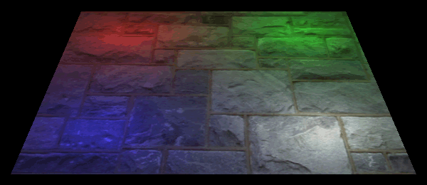

This tutorial will cover how to implement multiple point lights in OpenGL 4.0 using GLSL and C++.

Most of the tutorials I have used directional light since it simpler to understand and debug visually.
However, point lights are important for simulating the vast majority of light sources.
Pretty much anything that is illuminated with a light bulb is a point light.
Point lights have a position of origin and a color, they do not require a direction.
They illuminate strongest at the center or origin and dissipate in an even circular fashion as the light moves away from the source.
Point lights also use different types of attenuation and range to more accurately simulate how different point lights dissipate over a distance.
I will just cover the basic point light without attenuation and range for this tutorial.
The second concept I will be covering in this tutorial is multiple light sources.
Point lights work perfectly with this concept as most scenes only have a single directional light but will have numerous point lights.
For example, think about being inside a factory.
It may have a single directional light coming through the windows but there will be hundreds of light fixtures used to properly illuminate the building.
Also note that OpenGL 4.0 with GLSL has no limitation on the number of point lights you can have in a scene, it is completely up to you.
However, if you are looking to render thousands of point lights at the same time then you may want to look into deferred shading.
The third thing I want to introduce in this tutorial is the use of arrays of vectors in GLSL, and also how to send in large arrays of vectors into the shaders for rendering.
Light.vs
////////////////////////////////////////////////////////////////////////////////
// Filename: light.vs
////////////////////////////////////////////////////////////////////////////////
#version 400
GLSL allows the use of defines.
For this point light tutorial, we will define how many point lights this shader can use.
Both the vertex shader and pixel shader will need the same define.
/////////////
// DEFINES //
/////////////
#define NUM_LIGHTS 4
/////////////////////
// INPUT VARIABLES //
/////////////////////
in vec3 inputPosition;
in vec2 inputTexCoord;
in vec3 inputNormal;
GLSL also allows the use of array with defines to determine the number of elements in the array.
This output array is for the four vectors of the four point lights.
//////////////////////
// OUTPUT VARIABLES //
//////////////////////
out vec2 texCoord;
out vec3 normal;
out vec3 lightPos[NUM_LIGHTS];
We have added a uniform array of light position vectors.
This will hold the four point light positions that we send into the vertex shader from the SetShaderParameters function.
///////////////////////
// UNIFORM VARIABLES //
///////////////////////
uniform mat4 worldMatrix;
uniform mat4 viewMatrix;
uniform mat4 projectionMatrix;
uniform vec3 lightPosition[NUM_LIGHTS];
////////////////////////////////////////////////////////////////////////////////
// Vertex Shader
////////////////////////////////////////////////////////////////////////////////
void main(void)
{
vec4 worldPosition;
int i;
// Calculate the position of the vertex against the world, view, and projection matrices.
gl_Position = vec4(inputPosition, 1.0f) * worldMatrix;
gl_Position = gl_Position * viewMatrix;
gl_Position = gl_Position * projectionMatrix;
// Store the texture coordinates for the pixel shader.
texCoord = inputTexCoord;
// Calculate the normal vector against the world matrix only.
normal = inputNormal * mat3(worldMatrix);
// Normalize the normal vector.
normal = normalize(normal);
// Calculate the position of the vertex in the world.
worldPosition = vec4(inputPosition, 1.0f) * worldMatrix;
The position of the four lights in the world in relation to the vertex must be calculated, normalized, and then sent into the pixel shader.
You can see we are able to use a for loop the same as C++ to access and manipulate the GLSL arrays of data.
for(i=0; i<NUM_LIGHTS; i++)
{
// Determine the light positions based on the position of the lights and the position of the vertex in the world.
lightPos[i] = lightPosition[i].xyz - worldPosition.xyz;
// Normalize the light position vectors.
lightPos[i] = normalize(lightPos[i]);
}
}
Light.ps
////////////////////////////////////////////////////////////////////////////////
// Filename: light.ps
////////////////////////////////////////////////////////////////////////////////
#version 400
The pixel shader will require the same light number define as the vertex shader.
/////////////
// DEFINES //
/////////////
#define NUM_LIGHTS 4
This new input array is for the four vectors of the four point lights.
/////////////////////
// INPUT VARIABLES //
/////////////////////
in vec2 texCoord;
in vec3 normal;
in vec3 lightPos[NUM_LIGHTS];
//////////////////////
// OUTPUT VARIABLES //
//////////////////////
out vec4 outputColor;
This new array is for the four colors of the four point lights.
///////////////////////
// UNIFORM VARIABLES //
///////////////////////
uniform sampler2D shaderTexture;
uniform vec4 diffuseColor[NUM_LIGHTS];
////////////////////////////////////////////////////////////////////////////////
// Pixel Shader
////////////////////////////////////////////////////////////////////////////////
void main(void)
{
float lightIntensity[NUM_LIGHTS];
vec4 color[NUM_LIGHTS];
vec4 colorSum;
vec4 textureColor;
int i;
// Sample the pixel color from the texture using the sampler at this texture coordinate location.
textureColor = texture(shaderTexture, texCoord);
The light intensity for each of the four point lights is calculated using the position of the light and the normal vector.
The amount of color contributed by each point light is calculated from the intensity of the point light and the light color.
for(i=0; i<NUM_LIGHTS; i++)
{
// Calculate the different amounts of light on this pixel based on the positions of the lights.
lightIntensity[i] = clamp(dot(normal, lightPos[i]), 0.0f, 1.0f);
// Determine the diffuse color amount of each of the four lights.
color[i] = diffuseColor[i] * lightIntensity[i];
}
We add all the four point lights together to get the final light color for this pixel.
// Initialize the sum of colors.
colorSum = vec4(0.0f, 0.0f, 0.0f, 1.0f);
// Add all of the light colors up.
for(i=0; i<NUM_LIGHTS; i++)
{
colorSum.r += color[i].r;
colorSum.g += color[i].g;
colorSum.b += color[i].b;
}
We multiply the summed light color by the texture pixel and the calculations are complete.
// Multiply the texture pixel by the combination of all four light colors to get the final result.
outputColor = clamp(colorSum, 0.0f, 1.0f) * textureColor;
}
Lightshaderclass.h
The LightShaderClass is similar to the previous tutorials just that it has been modified to handle point lights.
Only the SetShaderParameters function has been modified.
////////////////////////////////////////////////////////////////////////////////
// Filename: lightshaderclass.h
////////////////////////////////////////////////////////////////////////////////
#ifndef _LIGHTSHADERCLASS_H_
#define _LIGHTSHADERCLASS_H_
//////////////
// INCLUDES //
//////////////
#include <iostream>
using namespace std;
///////////////////////
// MY CLASS INCLUDES //
///////////////////////
#include "openglclass.h"
////////////////////////////////////////////////////////////////////////////////
// Class name: LightShaderClass
////////////////////////////////////////////////////////////////////////////////
class LightShaderClass
{
public:
LightShaderClass();
LightShaderClass(const LightShaderClass&);
~LightShaderClass();
bool Initialize(OpenGLClass*);
void Shutdown();
bool SetShaderParameters(float*, float*, float*, float*, float*, int);
private:
bool InitializeShader(char*, char*);
void ShutdownShader();
char* LoadShaderSourceFile(char*);
void OutputShaderErrorMessage(unsigned int, char*);
void OutputLinkerErrorMessage(unsigned int);
private:
OpenGLClass* m_OpenGLPtr;
unsigned int m_vertexShader;
unsigned int m_fragmentShader;
unsigned int m_shaderProgram;
};
#endif
Lightshaderclass.cpp
////////////////////////////////////////////////////////////////////////////////
// Filename: lightshaderclass.cpp
////////////////////////////////////////////////////////////////////////////////
#include "lightshaderclass.h"
LightShaderClass::LightShaderClass()
{
m_OpenGLPtr = 0;
}
LightShaderClass::LightShaderClass(const LightShaderClass& other)
{
}
LightShaderClass::~LightShaderClass()
{
}
bool LightShaderClass::Initialize(OpenGLClass* OpenGL)
{
char vsFilename[128];
char psFilename[128];
bool result;
// Store the pointer to the OpenGL object.
m_OpenGLPtr = OpenGL;
// Set the location and names of the shader files.
strcpy(vsFilename, "../Engine/light.vs");
strcpy(psFilename, "../Engine/light.ps");
// Initialize the vertex and pixel shaders.
result = InitializeShader(vsFilename, psFilename);
if(!result)
{
return false;
}
return true;
}
void LightShaderClass::Shutdown()
{
// Shutdown the shader.
ShutdownShader();
// Release the pointer to the OpenGL object.
m_OpenGLPtr = 0;
return;
}
bool LightShaderClass::InitializeShader(char* vsFilename, char* fsFilename)
{
const char* vertexShaderBuffer;
const char* fragmentShaderBuffer;
int status;
// Load the vertex shader source file into a text buffer.
vertexShaderBuffer = LoadShaderSourceFile(vsFilename);
if(!vertexShaderBuffer)
{
return false;
}
// Load the fragment shader source file into a text buffer.
fragmentShaderBuffer = LoadShaderSourceFile(fsFilename);
if(!fragmentShaderBuffer)
{
return false;
}
// Create a vertex and fragment shader object.
m_vertexShader = m_OpenGLPtr->glCreateShader(GL_VERTEX_SHADER);
m_fragmentShader = m_OpenGLPtr->glCreateShader(GL_FRAGMENT_SHADER);
// Copy the shader source code strings into the vertex and fragment shader objects.
m_OpenGLPtr->glShaderSource(m_vertexShader, 1, &vertexShaderBuffer, NULL);
m_OpenGLPtr->glShaderSource(m_fragmentShader, 1, &fragmentShaderBuffer, NULL);
// Release the vertex and fragment shader buffers.
delete [] vertexShaderBuffer;
vertexShaderBuffer = 0;
delete [] fragmentShaderBuffer;
fragmentShaderBuffer = 0;
// Compile the shaders.
m_OpenGLPtr->glCompileShader(m_vertexShader);
m_OpenGLPtr->glCompileShader(m_fragmentShader);
// Check to see if the vertex shader compiled successfully.
m_OpenGLPtr->glGetShaderiv(m_vertexShader, GL_COMPILE_STATUS, &status);
if(status != 1)
{
// If it did not compile then write the syntax error message out to a text file for review.
OutputShaderErrorMessage(m_vertexShader, vsFilename);
return false;
}
// Check to see if the fragment shader compiled successfully.
m_OpenGLPtr->glGetShaderiv(m_fragmentShader, GL_COMPILE_STATUS, &status);
if(status != 1)
{
// If it did not compile then write the syntax error message out to a text file for review.
OutputShaderErrorMessage(m_fragmentShader, fsFilename);
return false;
}
// Create a shader program object.
m_shaderProgram = m_OpenGLPtr->glCreateProgram();
// Attach the vertex and fragment shader to the program object.
m_OpenGLPtr->glAttachShader(m_shaderProgram, m_vertexShader);
m_OpenGLPtr->glAttachShader(m_shaderProgram, m_fragmentShader);
// Bind the shader input variables.
m_OpenGLPtr->glBindAttribLocation(m_shaderProgram, 0, "inputPosition");
m_OpenGLPtr->glBindAttribLocation(m_shaderProgram, 1, "inputTexCoord");
m_OpenGLPtr->glBindAttribLocation(m_shaderProgram, 2, "inputNormal");
// Link the shader program.
m_OpenGLPtr->glLinkProgram(m_shaderProgram);
// Check the status of the link.
m_OpenGLPtr->glGetProgramiv(m_shaderProgram, GL_LINK_STATUS, &status);
if(status != 1)
{
// If it did not link then write the syntax error message out to a text file for review.
OutputLinkerErrorMessage(m_shaderProgram);
return false;
}
return true;
}
void LightShaderClass::ShutdownShader()
{
// Detach the vertex and fragment shaders from the program.
m_OpenGLPtr->glDetachShader(m_shaderProgram, m_vertexShader);
m_OpenGLPtr->glDetachShader(m_shaderProgram, m_fragmentShader);
// Delete the vertex and fragment shaders.
m_OpenGLPtr->glDeleteShader(m_vertexShader);
m_OpenGLPtr->glDeleteShader(m_fragmentShader);
// Delete the shader program.
m_OpenGLPtr->glDeleteProgram(m_shaderProgram);
return;
}
char* LightShaderClass::LoadShaderSourceFile(char* filename)
{
FILE* filePtr;
char* buffer;
long fileSize, count;
int error;
// Open the shader file for reading in text modee.
filePtr = fopen(filename, "r");
if(filePtr == NULL)
{
return 0;
}
// Go to the end of the file and get the size of the file.
fseek(filePtr, 0, SEEK_END);
fileSize = ftell(filePtr);
// Initialize the buffer to read the shader source file into, adding 1 for an extra null terminator.
buffer = new char[fileSize + 1];
// Return the file pointer back to the beginning of the file.
fseek(filePtr, 0, SEEK_SET);
// Read the shader text file into the buffer.
count = fread(buffer, 1, fileSize, filePtr);
if(count != fileSize)
{
return 0;
}
// Close the file.
error = fclose(filePtr);
if(error != 0)
{
return 0;
}
// Null terminate the buffer.
buffer[fileSize] = '\0';
return buffer;
}
void LightShaderClass::OutputShaderErrorMessage(unsigned int shaderId, char* shaderFilename)
{
long count;
int logSize, error;
char* infoLog;
FILE* filePtr;
// Get the size of the string containing the information log for the failed shader compilation message.
m_OpenGLPtr->glGetShaderiv(shaderId, GL_INFO_LOG_LENGTH, &logSize);
// Increment the size by one to handle also the null terminator.
logSize++;
// Create a char buffer to hold the info log.
infoLog = new char[logSize];
// Now retrieve the info log.
m_OpenGLPtr->glGetShaderInfoLog(shaderId, logSize, NULL, infoLog);
// Open a text file to write the error message to.
filePtr = fopen("shader-error.txt", "w");
if(filePtr == NULL)
{
cout << "Error opening shader error message output file." << endl;
return;
}
// Write out the error message.
count = fwrite(infoLog, sizeof(char), logSize, filePtr);
if(count != logSize)
{
cout << "Error writing shader error message output file." << endl;
return;
}
// Close the file.
error = fclose(filePtr);
if(error != 0)
{
cout << "Error closing shader error message output file." << endl;
return;
}
// Notify the user to check the text file for compile errors.
cout << "Error compiling shader. Check shader-error.txt for error message. Shader filename: " << shaderFilename << endl;
return;
}
void LightShaderClass::OutputLinkerErrorMessage(unsigned int programId)
{
long count;
FILE* filePtr;
int logSize, error;
char* infoLog;
// Get the size of the string containing the information log for the failed shader compilation message.
m_OpenGLPtr->glGetProgramiv(programId, GL_INFO_LOG_LENGTH, &logSize);
// Increment the size by one to handle also the null terminator.
logSize++;
// Create a char buffer to hold the info log.
infoLog = new char[logSize];
// Now retrieve the info log.
m_OpenGLPtr->glGetProgramInfoLog(programId, logSize, NULL, infoLog);
// Open a file to write the error message to.
filePtr = fopen("linker-error.txt", "w");
if(filePtr == NULL)
{
cout << "Error opening linker error message output file." << endl;
return;
}
// Write out the error message.
count = fwrite(infoLog, sizeof(char), logSize, filePtr);
if(count != logSize)
{
cout << "Error writing linker error message output file." << endl;
return;
}
// Close the file.
error = fclose(filePtr);
if(error != 0)
{
cout << "Error closing linker error message output file." << endl;
return;
}
// Pop a message up on the screen to notify the user to check the text file for linker errors.
cout << "Error linking shader program. Check linker-error.txt for message." << endl;
return;
}
The SetShaderParameters function has been modified to take as input an array of diffuse color vectors and an array of light position vectors.
We also take as input the number of lights so we know how many vectors are in each array.
bool LightShaderClass::SetShaderParameters(float* worldMatrix, float* viewMatrix, float* projectionMatrix, float* diffuseColorArray, float* lightPositionArray, int numLights)
{
float tpWorldMatrix[16], tpViewMatrix[16], tpProjectionMatrix[16];
int location;
// Transpose the matrices to prepare them for the shader.
m_OpenGLPtr->MatrixTranspose(tpWorldMatrix, worldMatrix);
m_OpenGLPtr->MatrixTranspose(tpViewMatrix, viewMatrix);
m_OpenGLPtr->MatrixTranspose(tpProjectionMatrix, projectionMatrix);
// Install the shader program as part of the current rendering state.
m_OpenGLPtr->glUseProgram(m_shaderProgram);
// Set the world matrix in the vertex shader.
location = m_OpenGLPtr->glGetUniformLocation(m_shaderProgram, "worldMatrix");
if(location == -1)
{
cout << "World matrix not set." << endl;
}
m_OpenGLPtr ->glUniformMatrix4fv(location, 1, false, tpWorldMatrix);
// Set the view matrix in the vertex shader.
location = m_OpenGLPtr->glGetUniformLocation(m_shaderProgram, "viewMatrix");
if(location == -1)
{
cout << "View matrix not set." << endl;
}
m_OpenGLPtr->glUniformMatrix4fv(location, 1, false, tpViewMatrix);
// Set the projection matrix in the vertex shader.
location = m_OpenGLPtr->glGetUniformLocation(m_shaderProgram, "projectionMatrix");
if(location == -1)
{
cout << "Projection matrix not set." << endl;
}
m_OpenGLPtr->glUniformMatrix4fv(location, 1, false, tpProjectionMatrix);
Here we set our new light position array in the vertex shader.
We use the larger single input array called lightPositionArray and set it using the regular glUniform3fv function.
However, note that the second input to that function is now the number of lights (numLights).
This used to be the value 1.
But now since we have a number of vectors in the array, we use this second input so that the shader is aware of how many light position vectors are stored in the single larger array.
// Set the light position array in the vertex shader.
location = m_OpenGLPtr->glGetUniformLocation(m_shaderProgram, "lightPosition");
if(location == -1)
{
cout << "Light position not set." << endl;
}
m_OpenGLPtr->glUniform3fv(location, numLights, lightPositionArray);
// Set the texture in the pixel shader to use the data from the first texture unit.
location = m_OpenGLPtr->glGetUniformLocation(m_shaderProgram, "shaderTexture");
if(location == -1)
{
cout << "Shader texture not set." << endl;
}
m_OpenGLPtr->glUniform1i(location, 0);
Likewise, we set the array of diffuse colors for each point light in the pixel shader using the glUniform4fv function but we set the second input value to be the number of lights instead of 1.
// Set the diffuse light color array in the pixel shader.
location = m_OpenGLPtr->glGetUniformLocation(m_shaderProgram, "diffuseColor");
if(location == -1)
{
cout << "Diffuse color not set." << endl;
}
m_OpenGLPtr->glUniform4fv(location, numLights, diffuseColorArray);
return true;
}
Lightclass.h
The LightClass has been modified to handle being a point light also.
It has variables and helper functions for position and color which are all that are needed for point lights in this tutorial.
////////////////////////////////////////////////////////////////////////////////
// Filename: lightclass.h
////////////////////////////////////////////////////////////////////////////////
#ifndef _LIGHTCLASS_H_
#define _LIGHTCLASS_H_
////////////////////////////////////////////////////////////////////////////////
// Class name: LightClass
////////////////////////////////////////////////////////////////////////////////
class LightClass
{
public:
LightClass();
LightClass(const LightClass&);
~LightClass();
void SetDiffuseColor(float, float, float, float);
void SetDirection(float, float, float);
void SetAmbientLight(float, float, float, float);
void SetSpecularColor(float, float, float, float);
void SetSpecularPower(float);
void SetPosition(float, float, float);
void GetDiffuseColor(float*);
void GetDirection(float*);
void GetAmbientLight(float*);
void GetSpecularColor(float*);
void GetSpecularPower(float&);
void GetPosition(float*);
private:
float m_diffuseColor[4];
float m_direction[3];
float m_ambientLight[4];
float m_specularColor[4];
float m_specularPower;
float m_position[3];
};
#endif
Lightclass.cpp
////////////////////////////////////////////////////////////////////////////////
// Filename: lightclass.cpp
////////////////////////////////////////////////////////////////////////////////
#include "lightclass.h"
LightClass::LightClass()
{
}
LightClass::LightClass(const LightClass& other)
{
}
LightClass::~LightClass()
{
}
void LightClass::SetDiffuseColor(float red, float green, float blue, float alpha)
{
m_diffuseColor[0] = red;
m_diffuseColor[1] = green;
m_diffuseColor[2] = blue;
m_diffuseColor[3] = alpha;
return;
}
void LightClass::SetDirection(float x, float y, float z)
{
m_direction[0] = x;
m_direction[1] = y;
m_direction[2] = z;
return;
}
void LightClass::SetAmbientLight(float red, float green, float blue, float alpha)
{
m_ambientLight[0] = red;
m_ambientLight[1] = green;
m_ambientLight[2] = blue;
m_ambientLight[3] = alpha;
return;
}
void LightClass::SetSpecularColor(float red, float green, float blue, float alpha)
{
m_specularColor[0] = red;
m_specularColor[1] = green;
m_specularColor[2] = blue;
m_specularColor[3] = alpha;
return;
}
void LightClass::SetSpecularPower(float power)
{
m_specularPower = power;
return;
}
void LightClass::SetPosition(float x, float y, float z)
{
m_position[0] = x;
m_position[1] = y;
m_position[2] = z;
return;
}
void LightClass::GetDiffuseColor(float* color)
{
color[0] = m_diffuseColor[0];
color[1] = m_diffuseColor[1];
color[2] = m_diffuseColor[2];
color[3] = m_diffuseColor[3];
return;
}
void LightClass::GetDirection(float* direction)
{
direction[0] = m_direction[0];
direction[1] = m_direction[1];
direction[2] = m_direction[2];
return;
}
void LightClass::GetAmbientLight(float* ambient)
{
ambient[0] = m_ambientLight[0];
ambient[1] = m_ambientLight[1];
ambient[2] = m_ambientLight[2];
ambient[3] = m_ambientLight[3];
return;
}
void LightClass::GetSpecularColor(float* specular)
{
specular[0] = m_specularColor[0];
specular[1] = m_specularColor[1];
specular[2] = m_specularColor[2];
specular[3] = m_specularColor[3];
return;
}
void LightClass::GetSpecularPower(float& power)
{
power = m_specularPower;
return;
}
void LightClass::GetPosition(float* position)
{
position[0] = m_position[0];
position[1] = m_position[1];
position[2] = m_position[2];
return;
}
Applicationclass.h
////////////////////////////////////////////////////////////////////////////////
// Filename: applicationclass.h
////////////////////////////////////////////////////////////////////////////////
#ifndef _APPLICATIONCLASS_H_
#define _APPLICATIONCLASS_H_
/////////////
// GLOBALS //
/////////////
const bool FULL_SCREEN = false;
const bool VSYNC_ENABLED = true;
const float SCREEN_NEAR = 0.3f;
const float SCREEN_DEPTH = 1000.0f;
///////////////////////
// MY CLASS INCLUDES //
///////////////////////
#include "inputclass.h"
#include "openglclass.h"
#include "modelclass.h"
#include "cameraclass.h"
#include "lightshaderclass.h"
#include "lightclass.h"
////////////////////////////////////////////////////////////////////////////////
// Class Name: ApplicationClass
////////////////////////////////////////////////////////////////////////////////
class ApplicationClass
{
public:
ApplicationClass();
ApplicationClass(const ApplicationClass&);
~ApplicationClass();
bool Initialize(Display*, Window, int, int);
void Shutdown();
bool Frame(InputClass*);
private:
bool Render(float);
private:
OpenGLClass* m_OpenGL;
ModelClass* m_Model;
CameraClass* m_Camera;
LightShaderClass* m_LightShader;
We will create four different point lights in this tutorial to implement both point lights and multiple light sources.
LightClass *m_Lights;
int m_numLights;
};
#endif
Applicationclass.cpp
////////////////////////////////////////////////////////////////////////////////
// Filename: applicationclass.cpp
////////////////////////////////////////////////////////////////////////////////
#include "applicationclass.h"
ApplicationClass::ApplicationClass()
{
m_OpenGL = 0;
m_Model = 0;
m_Camera = 0;
m_LightShader = 0;
m_Lights = 0;
}
ApplicationClass::ApplicationClass(const ApplicationClass& other)
{
}
ApplicationClass::~ApplicationClass()
{
}
bool ApplicationClass::Initialize(Display* display, Window win, int screenWidth, int screenHeight)
{
char modelFilename[128];
char textureFilename[128];
bool result;
// Create and initialize the OpenGL object.
m_OpenGL = new OpenGLClass;
result = m_OpenGL->Initialize(display, win, screenWidth, screenHeight, SCREEN_NEAR, SCREEN_DEPTH, VSYNC_ENABLED);
if(!result)
{
cout << "Error: Could not initialize the OpenGL object." << endl;
return false;
}
We will set the camera up and back a bit so it can see the entire scene easier.
// Create and initialize the camera object.
m_Camera = new CameraClass;
m_Camera->SetPosition(0.0f, 2.0f, -12.0f);
m_Camera->Render();
For this tutorial we will use a flat plane as the object we are illuminating with our point lights.
// Set the file name of the model.
strcpy(modelFilename, "../Engine/data/plane.txt");
// Set the file name of the texture.
strcpy(textureFilename, "../Engine/data/stone01.tga");
// Create and initialize the model object.
m_Model = new ModelClass;
result = m_Model->Initialize(m_OpenGL, modelFilename, textureFilename, false);
if(!result)
{
cout << "Error: Could not initialize the model object." << endl;
return false;
}
// Create and initialize the light shader object.
m_LightShader = new LightShaderClass;
result = m_LightShader->Initialize(m_OpenGL);
if(!result)
{
cout << "Error: Could not initialize the light shader object." << endl;
return false;
}
Here we create our array of four lights.
We will create a red, green, blue, and white light and place each in positions just above the four corners of the flat plane.
// Set the number of lights we will use.
m_numLights = 4;
// Create and initialize the light objects array.
m_Lights = new LightClass[m_numLights];
// Manually set the color and position of each light.
m_Lights[0].SetDiffuseColor(1.0f, 0.0f, 0.0f, 1.0f); // Red
m_Lights[0].SetPosition(-3.0f, 1.0f, 3.0f);
m_Lights[1].SetDiffuseColor(0.0f, 1.0f, 0.0f, 1.0f); // Green
m_Lights[1].SetPosition(3.0f, 1.0f, 3.0f);
m_Lights[2].SetDiffuseColor(0.0f, 0.0f, 1.0f, 1.0f); // Blue
m_Lights[2].SetPosition(-3.0f, 1.0f, -3.0f);
m_Lights[3].SetDiffuseColor(1.0f, 1.0f, 1.0f, 1.0f); // White
m_Lights[3].SetPosition(3.0f, 1.0f, -3.0f);
return true;
}
void ApplicationClass::Shutdown()
{
We release our new light array here.
// Release the light objects array.
if(m_Lights)
{
delete [] m_Lights;
m_Lights = 0;
}
// Release the light shader object.
if(m_LightShader)
{
m_LightShader->Shutdown();
delete m_LightShader;
m_LightShader = 0;
}
// Release the model object.
if(m_Model)
{
m_Model->Shutdown();
delete m_Model;
m_Model = 0;
}
// Release the camera object.
if(m_Camera)
{
delete m_Camera;
m_Camera = 0;
}
// Release the OpenGL object.
if(m_OpenGL)
{
m_OpenGL->Shutdown();
delete m_OpenGL;
m_OpenGL = 0;
}
return;
}
bool ApplicationClass::Frame(InputClass* Input)
{
static float rotation = 360.0f;
bool result;
// Check if the escape key has been pressed, if so quit.
if(Input->IsEscapePressed() == true)
{
return false;
}
// Update the rotation variable each frame.
rotation -= 0.0174532925f * 1.0f;
if(rotation <= 0.0f)
{
rotation += 360.0f;
}
// Render the graphics scene.
result = Render(rotation);
if(!result)
{
return false;
}
return true;
}
bool ApplicationClass::Render(float rotation)
{
float worldMatrix[16], viewMatrix[16], projectionMatrix[16];
float diffuseColor[4], diffuseColorArray[16];
float lightPosition[3], lightPositionArray[12];
int i, j, k;
bool result;
// Clear the buffers to begin the scene.
m_OpenGL->BeginScene(0.0f, 0.0f, 0.0f, 1.0f);
// Get the world, view, and projection matrices from the opengl and camera objects.
m_OpenGL->GetWorldMatrix(worldMatrix);
m_Camera->GetViewMatrix(viewMatrix);
m_OpenGL->GetProjectionMatrix(projectionMatrix);
We setup the two arrays (color and position) from the four point lights.
This makes it easier to just send in the two array variables into our shaders instead of the eight different light components.
// Get the light properties.
j=0;
k=0;
for(i=0; i<m_numLights; i++)
{
// Get the color and position of each light.
m_Lights[i].GetDiffuseColor(diffuseColor);
m_Lights[i].GetPosition(lightPosition);
// Copy the individual light data into the single larger arrays.
diffuseColorArray[j+0] = diffuseColor[0];
diffuseColorArray[j+1] = diffuseColor[1];
diffuseColorArray[j+2] = diffuseColor[2];
diffuseColorArray[j+3] = diffuseColor[3];
j+=4;
lightPositionArray[k+0] = lightPosition[0];
lightPositionArray[k+1] = lightPosition[1];
lightPositionArray[k+2] = lightPosition[2];
k+=3;
}
The SetShaderParameters function will now take in the two arrays and the number of lights.
// Set the light shader as the current shader program and set the matrices and light value arrays that it will use for rendering, including the number of lights.
result = m_LightShader->SetShaderParameters(worldMatrix, viewMatrix, projectionMatrix, diffuseColorArray, lightPositionArray, m_numLights);
if(!result)
{
return false;
}
// Set the texture for the model in the pixel shader.
m_Model->SetTexture(0);
// Render the model.
m_Model->Render();
// Present the rendered scene to the screen.
m_OpenGL->EndScene();
return true;
}
Summary
Now you should understand the basic concept of illuminating models with point lights and multiple light sources.
To Do Exercises
1. Recompile and run the program. You should see a plane illuminated by four different point lights.
2. Position the red, green, and blue point lights at the same location. You should see the resulting point light is white.
3. Change the color and position of the point lights to see the different effects.
4. Add a fifth point light.
5. Only render one point light to see the effect it produces by itself.
6. Research and implement the original fixed function point light equation to include the different types of attenuation and so forth.
Source Code
Source Code and Data Files: gl4linuxtut11_src.tar.gz